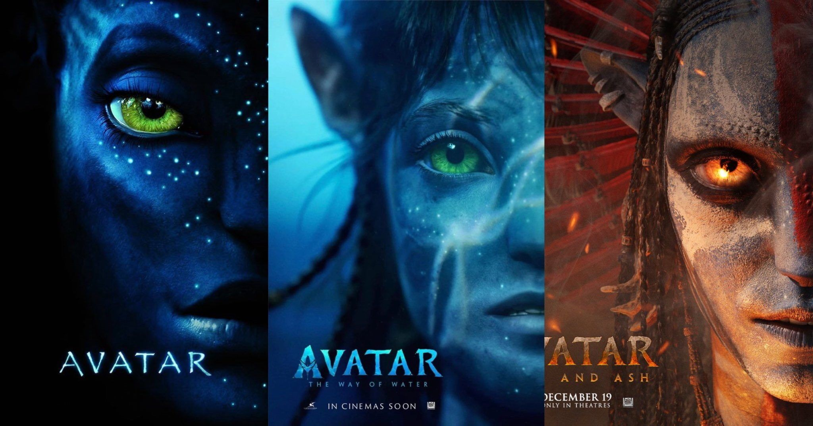

Sobre la película
James Horner Pandora
Franquicia “Avatar”

La franquicia “Avatar” es una saga de ciencia ficción a gran escala creada por James Cameron. Originalmente concebida como una pentalogía (cinco películas), hasta el momento se han estrenado tres partes, y la producción de las siguientes películas está en preparación activa.
Lista de películas de la trilogía
“Avatar” (2009)
La primera película fue una revolución en el cine, generó un gran impacto en el campo de los efectos visuales y todavía sigue siendo la película más taquillera de la historia. La acción ocurre en el año 2154 en el planeta ficticio Pandora. El ex marine Jake Sully (Sam Worthington) llega al planeta en lugar de su hermano científico fallecido. Para estudiar la cultura de los habitantes locales, los Na’vi, le crean un avatar — un cuerpo híbrido de Na’vi con la conciencia humana. Jake se enamora de la hija del líder del clan, Neytiri (Zoe Saldaña), y se pone del lado de los nativos. En el final, defiende al clan del ataque de los humanos que buscan el valioso mineral unobtainium.
“Avatar: El camino del agua” (2022)
La secuela se estrenó 13 años después de la primera parte. La historia ocurre más de 10 años después de los eventos del primer film. Jake y Neytiri formaron una familia y se convirtieron en líderes del clan. Los humanos regresan a Pandora con una nueva misión: no solo quieren recursos, sino también un lugar para una colonia humana debido al agotamiento de la Tierra. Para proteger a sus hijos, Jake lleva a su familia a las aguas costeras, donde buscan refugio en el clan Metkayina, unos buceadores que viven en armonía con el océano.
“Avatar: Fuego y ceniza” (2025)
Los eventos comienzan una semana después de la muerte del hijo mayor de la familia Sully, Neteyam, al final de “El camino del agua”. La familia atraviesa el duelo, pero continúa su camino. Los protagonistas se enfrentan a un clan Na’vi hostil: el Pueblo de las Cenizas (clan Mangkwan), liderado por la jefa Varang. Este clan representa una nueva amenaza para los habitantes de Pandora. La película también revela que no todos los Na’vi son pacíficos: algunos tienen su propia religión y declaran que la diosa del planeta, Eywa, está muerta.